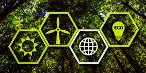
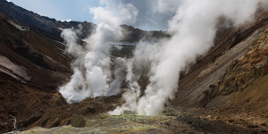

Keunggulan Geothermal

Ramah Lingkungan
Energi panas bumi tidak menghasilkan polusi udara atau emisi karbon.

Sumber Energi Stabil
Berbeda dengan energi angin atau matahari, energi panas bumi dapat diandalkan sepanjang waktu.

Potensi Melimpah
Sumber daya panas bumi tersedia melimpah, terutama di wilayah yang memiliki aktivitas vulkanik tinggi.